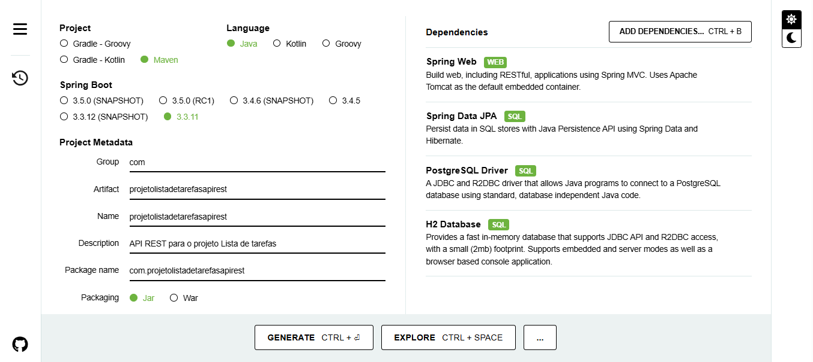
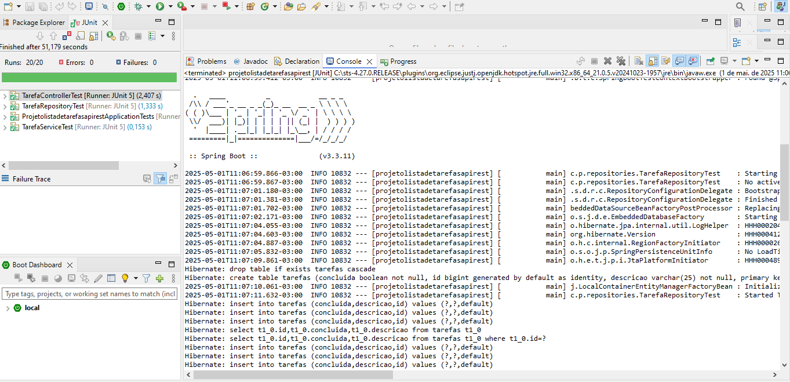
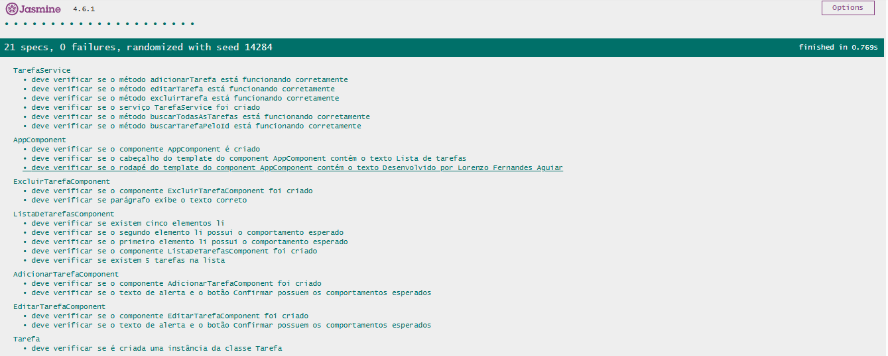

Em julho do ano de 2024, eu, Lorenzo Fernandes Aguiar, concluí minha graduação em Análise e Desenvolvimento de Sistemas. Esse curso, que foi ofertado pela Universidade Estácio de Sá, permitiu que eu obtivesse os conhecimentos necessários para analisar, desenvolver, testar e manutenir um software.
Atualmente, eu realizo projetos pessoais voltados para a área de desenvolvimento de software. Faço isso com o intuito de ganhar a experiência que eu preciso para ingressar no mercado de trabalho como desenvolvedor de software.
Um desses projetos pessoais eu denominei de Lista de tarefas. Nesse projeto, eu utilizei habilidades e tecnologias que estão sendo bastante requisitadas pelo atual mercado de trabalho. Entre as habilidades e as tecnologias que eu utilizei durante o projeto Lista de tarefas, eu posso citar: programação orientada a objetos, API REST, Java, Spring Boot, bancos de dados relacionais, aplicação web e Angular.
Feita a introdução acima, agora eu explicarei o motivo pelo qual eu escrevo o presente texto. Eu escrevo o presente texto como forma de relatar as etapas que eu segui para finalizar o projeto Lista de tarefas. Através do presente texto eu busco comprovar minhas habilidades e meus conhecimentos para as empresas que estão precisando de um desenvolvedor de software.
Vale ressaltar que, por questões de organização, eu dividi o presente texto em tópicos e subtópicos. Esses tópicos e subtópicos podem ser vistos abaixo.
Abaixo estão listados os requisitos que eu identifiquei para o projeto Lista de tarefas.
Através do Git eu realizei o controle de versão dos arquivos relacionados ao projeto Lista de tarefas. Regularmente, eu enviava alterações de meu repositório local para um repositório que eu possuo dentro do GitHub.
Vale destacar que, para o projeto Lista de tarefas, eu criei dois repositórios dentro da minha conta do GitHub. O primeiro repositório se chama projeto-lista-de-tarefas-api-rest, sendo que tal repositório contém os arquivos relacionados com a API REST do projeto Lista de tarefas. O segundo repositório se chama projeto-lista-de-tarefas-frontend, sendo que tal repositório contém os arquivos relacionados com o front-end da aplicação web do projeto Lista de tarefas.
O repositório chamado projeto-lista-de-tarefas-api-rest pode ser acessado através do link https://github.com/lorenzofernandesaguiar/projeto-lista-de-tarefas-api-rest. Já o repositório chamado projeto-lista-de-tarefas-frontend pode ser acessado através do link https://github.com/lorenzofernandesaguiar/projeto-lista-de-tarefas-frontend.
Os subtópicos seguintes relatam as etapas que eu segui para desenvolver a API REST do projeto Lista de tarefas.
Eu acessei o site Spring Initializr e promovi as configurações que podem ser vistas na captura de tela abaixo.
Sobre a captura de tela acima, vale destacar que:
Após promover as configurações mostradas na captura de tela acima, o Spring Initializr me gerou uma pasta, chamada projetolistadetarefasapirest. Eu importei essa pasta para o meu workspace do Spring Tool Suite, IDE que eu utilizei para desenvolver a API REST. Foi dentro da pasta projetolistadetarefasapirest que eu incluí os arquivos que iriam compor a API REST.
Vale destacar que a pasta projetolistadetarefasapirest já veio com alguns arquivos básicos. Desse modo, antes de realizar qualquer alteração nessa pasta, eu fiz um commit para que esses arquivos básicos fossem adicionados dentro do meu repositório chamado projeto-lista-de-tarefas-api-rest. Tal commit pode ser visto através do link https://github.com/lorenzofernandesaguiar/projeto-lista-de-tarefas-api-rest/commit/694943049dc62b412656879942934facaa1f88cf.
Dentro do pacote principal da pasta projetolistadetarefasapirest, eu criei o pacote entities contendo a classe Tarefa.
O código Java que eu escrevi para a classe Tarefa pode ser visto através do link https://github.com/lorenzofernandesaguiar/projeto-lista-de-tarefas-api-rest/blob/main/src/main/java/com/projetolistadetarefasapirest/entities/Tarefa.java. Cabe ressaltar que o código Java que eu escrevi para a classe Tarefa está hospedado no meu repositório chamado projeto-lista-de-tarefas-api-rest.
Sobre o código Java que eu escrevi para a classe Tarefa, vale destacar que:
Depois que eu escrevi o código Java para a classe Tarefa, eu fiz um commit para que a referida classe fosse adicionada dentro do meu repositório chamado projeto-lista-de-tarefas-api-rest. Tal commit pode ser visto através do link https://github.com/lorenzofernandesaguiar/projeto-lista-de-tarefas-api-rest/commit/9260dc702bb5aa31a0868247b8b244ce94bf4c1c.
Dentro do pacote principal da pasta projetolistadetarefasapirest, eu criei o pacote dto contendo a classe TarefaDTO.
O código Java que eu escrevi para a classe TarefaDTO pode ser visto através do link https://github.com/lorenzofernandesaguiar/projeto-lista-de-tarefas-api-rest/blob/main/src/main/java/com/projetolistadetarefasapirest/dto/TarefaDTO.java. Cabe ressaltar que o código Java que eu escrevi para a classe TarefaDTO está hospedado no meu repositório chamado projeto-lista-de-tarefas-api-rest.
Sobre o código Java que eu escrevi para a classe TarefaDTO, vale destacar que:
Depois que eu escrevi o código Java para a classe TarefaDTO, eu fiz um commit para que a referida classe fosse adicionada dentro do meu repositório chamado projeto-lista-de-tarefas-api-rest. Tal commit pode ser visto através do link https://github.com/lorenzofernandesaguiar/projeto-lista-de-tarefas-api-rest/commit/6a4cfcb0dcce4abdd2a47d169019d7ce17c86dbc.
Dentro do pacote principal da pasta projetolistadetarefasapirest, eu criei o pacote repositories contendo a interface TarefaRepository.
O código Java que eu escrevi para a interface TarefaRepository pode ser visto através do link https://github.com/lorenzofernandesaguiar/projeto-lista-de-tarefas-api-rest/blob/main/src/main/java/com/projetolistadetarefasapirest/repositories/TarefaRepository.java. Cabe ressaltar que o código Java que eu escrevi para a interface TarefaRepository está hospedado no meu repositório chamado projeto-lista-de-tarefas-api-rest.
Sobre o código Java que eu escrevi para a inteface TarefaRepository, vale destacar que:
Depois que eu escrevi o código Java para a interface TarefaRepository, eu fiz um commit para que a referida classe fosse adicionada dentro do meu repositório chamado projeto-lista-de-tarefas-api-rest. Tal commit pode ser visto através do link https://github.com/lorenzofernandesaguiar/projeto-lista-de-tarefas-api-rest/commit/70beeeb9cf16fa49e9542a0b551de703978b6b41.
Quando eu importei a pasta projetolistadetarefasapirest para o meu workspace do Spring Tool Suite, a referida pasta já contava com o arquivo application.properties. Esse arquivo corresponde ao perfil default da API REST do projeto Lista de tarefas. Eu deixei esse arquivo em branco, pois eu não vi a necessidade de promover uma configuração específica para o perfil default.
No mesmo local em que se encontra o arquivo application.properties, eu criei o arquivo application-local.properties. Esse arquivo corresponde ao perfil local da API REST do projeto Lista de tarefas.
As configurações que eu escrevi para o arquivo application-local.properties podem ser vistas através do link https://github.com/lorenzofernandesaguiar/projeto-lista-de-tarefas-api-rest/blob/main/src/main/resources/application-local.properties. Cabe ressaltar que as configurações que eu escrevi para o arquivo application-local.properties estão hospedadas no meu repositório chamado projeto-lista-de-tarefas-api-rest.
Sobre as configurações que eu escrevi para o arquivo application-local.properties, vale destacar que:
Depois que eu escrevi as configurações para o arquivo application-local.properties, eu fiz um commit para que o referido arquivo fosse adicionado dentro do meu repositório chamado projeto-lista-de-tarefas-api-rest. Tal commit pode ser visto através do link https://github.com/lorenzofernandesaguiar/projeto-lista-de-tarefas-api-rest/commit/f4cf0dd6b2d6756514068c58e05f22407b7576fc.
Dentro do pacote principal da pasta projetolistadetarefasapirest, eu criei o pacote services contendo a classe TarefaService.
O código Java que eu escrevi para a classe TarefaService pode ser visto através do link https://github.com/lorenzofernandesaguiar/projeto-lista-de-tarefas-api-rest/blob/main/src/main/java/com/projetolistadetarefasapirest/services/TarefaService.java. Cabe ressaltar que o código Java que eu escrevi para a classe TarefaService está hospedado no meu repositório chamado projeto-lista-de-tarefas-api-rest.
Sobre o código Java que eu escrevi para a classe TarefaService, vale destacar que:
Depois que eu escrevi o código Java para a classe TarefaService, eu fiz um commit para que a referida classe fosse adicionada dentro do meu repositório chamado projeto-lista-de-tarefas-api-rest. Tal commit pode ser visto através do link https://github.com/lorenzofernandesaguiar/projeto-lista-de-tarefas-api-rest/commit/56164f33d73b4ea6131b6d314c992721f4027419.
Dentro do pacote principal da pasta projetolistadetarefasapirest, eu criei o pacote controllers contendo a classe TarefaController.
O código Java que eu escrevi para a classe TarefaController pode ser visto através do link https://github.com/lorenzofernandesaguiar/projeto-lista-de-tarefas-api-rest/blob/main/src/main/java/com/projetolistadetarefasapirest/controllers/TarefaController.java. Cabe ressaltar que o código Java que eu escrevi para a classe TarefaController está hospedado no meu repositório chamado projeto-lista-de-tarefas-api-rest.
Sobre o código Java que eu escrevi para a classe TarefaController, vale destacar que:
Depois que eu escrevi o código Java para a classe TarefaController, eu fiz um commit para que a referida classe fosse adicionada dentro do meu repositório chamado projeto-lista-de-tarefas-api-rest. Tal commit pode ser visto através do link https://github.com/lorenzofernandesaguiar/projeto-lista-de-tarefas-api-rest/commit/b49f641dbf3ff0b20fb810d7537b1df744821d9a.
Dentro do pacote principal da pasta projetolistadetarefasapirest, eu criei o pacote configurations contendo a classe WebConfiguration.
O código Java que eu escrevi para a classe WebConfiguration pode ser visto através do link https://github.com/lorenzofernandesaguiar/projeto-lista-de-tarefas-api-rest/blob/main/src/main/java/com/projetolistadetarefasapirest/configurations/WebConfiguration.java. Cabe ressaltar que o código Java que eu escrevi para a classe WebConfiguration está hospedado no meu repositório chamado projeto-lista-de-tarefas-api-rest.
Sobre o código Java que eu escrevi para a classe WebConfiguration, vale destacar que:
Depois que eu escrevi o código Java para a classe WebConfiguration, eu fiz um commit para que a referida classe fosse adicionada dentro do meu repositório chamado projeto-lista-de-tarefas-api-rest. Tal commit pode ser visto através do link https://github.com/lorenzofernandesaguiar/projeto-lista-de-tarefas-api-rest/commit/f05ee8d42edf0cb58cfa656685fdd441a171e57a.
Os subtópicos seguintes relatam as etapas que eu segui para escrever os testes unitários que devem validar a API REST do projeto Lista de tarefas.
Dentro da pasta projetolistadetarefasapirest, eu fui até a pasta destinada a testes e criei o pacote repositories contendo a classe TarefaRepositoryTest.
O código Java que eu escrevi para a classe TarefaRepositoryTest pode ser visto através do link https://github.com/lorenzofernandesaguiar/projeto-lista-de-tarefas-api-rest/blob/main/src/test/java/com/projetolistadetarefasapirest/repositories/TarefaRepositoryTest.java. Cabe ressaltar que o código Java que eu escrevi para a classe TarefaRepositoryTest está hospedado no meu repositório chamado projeto-lista-de-tarefas-api-rest.
Sobre o código Java que eu escrevi para a classe TarefaRepositoryTest, vale destacar que:
Depois que eu escrevi o código Java para a classe TarefaRepositoryTest, eu fiz um commit para que a referida classe fosse adicionada dentro do meu repositório chamado projeto-lista-de-tarefas-api-rest. Tal commit pode ser visto através do link https://github.com/lorenzofernandesaguiar/projeto-lista-de-tarefas-api-rest/commit/8dd5a11a91a2f9bfccf3251ccff22ec6966301ee.
Dentro da pasta projetolistadetarefasapirest, eu fui até a pasta destinada a testes e criei o pacote services contendo a classe TarefaServiceTest.
O código Java que eu escrevi para a classe TarefaServiceTest pode ser visto através do link https://github.com/lorenzofernandesaguiar/projeto-lista-de-tarefas-api-rest/blob/main/src/test/java/com/projetolistadetarefasapirest/services/TarefaServiceTest.java. Cabe ressaltar que o código Java que eu escrevi para a classe TarefaServiceTest está hospedado no meu repositório chamado projeto-lista-de-tarefas-api-rest.
Sobre o código Java que eu escrevi para a classe TarefaServiceTest, vale destacar que:
Depois que eu escrevi o código Java para a classe TarefaServiceTest, eu fiz um commit para que a referida classe fosse adicionada dentro do meu repositório chamado projeto-lista-de-tarefas-api-rest. Tal commit pode ser visto através do link https://github.com/lorenzofernandesaguiar/projeto-lista-de-tarefas-api-rest/commit/a898921297310721a5106ba58f662159139329ad.
Dentro da pasta projetolistadetarefasapirest, eu fui até a pasta destinada a testes e criei o pacote controllers contendo a classe TarefaControllerTest.
O código Java que eu escrevi para a classe TarefaControllerTest pode ser visto através do link https://github.com/lorenzofernandesaguiar/projeto-lista-de-tarefas-api-rest/blob/main/src/test/java/com/projetolistadetarefasapirest/controllers/TarefaControllerTest.java. Cabe ressaltar que o código Java que eu escrevi para a classe TarefaControllerTest está hospedado no meu repositório chamado projeto-lista-de-tarefas-api-rest.
Sobre o código Java que eu escrevi para a classe TarefaControllerTest, vale destacar que:
Depois que eu escrevi o código Java para a classe TarefaControllerTest, eu fiz um commit para que a referida classe fosse adicionada dentro do meu repositório chamado projeto-lista-de-tarefas-api-rest. Tal commit pode ser visto através do link https://github.com/lorenzofernandesaguiar/projeto-lista-de-tarefas-api-rest/commit/4074c37ad20924b01ffdb1461aa75eff7ca26315.
Dentro do meu workspace do Spring Tool Suite, eu tomei providências para que os testes unitários escritos ao longo dos tópicos anteriores fossem rodados com o perfil default.
Cabe ressaltar que foi necessária uma conexão com um banco de dados para a realização dos testes unitários relativos ao repositório da API REST. Sabendo disso, eu anotei a classe TarefaRepositoryTest com @DataJpaTest. Assim, eu fiz com que o Spring Boot automaticamente configurasse um banco de dados incorporado para o repositório da API REST. Esse banco de dados foi o H2 Database.
Todos os testes obtiveram sucesso, conforme pode ser visto na captura de tela abaixo.
Os subtópicos seguintes relatam as etapas que eu segui para desenvolver o front-end da aplicação web do projeto Lista de tarefas.
Eu instalei o Angular CLI em meu computador, pois o Angular CLI me fornece comandos úteis na hora de se desenvolver com Angular. Um desses comandos é o ng new.
Desse modo, dentro de uma ferramenta de linha de comando, eu digitei o comando ng new projeto-lista-de-tarefas-frontend. Assim, foi criada uma pasta chamada projeto-lista-de-tarefas-frontend. Eu abri a pasta projeto-lista-de-tarefas-frontend dentro do Visual Studio Code, IDE que eu utilizei para desenvolver o front-end da aplicação web. Foi dentro dessa pasta que eu incluí os arquivos que iriam compor o front-end da aplicação web.
Vale destacar que a pasta projeto-lista-de-tarefas-frontend já veio com alguns arquivos básicos. Desse modo, antes de realizar qualquer alteração nessa pasta, eu fiz um commit para que esses arquivos básicos fossem adicionados dentro do meu repositório chamado projeto-lista-de-tarefas-frontend. Tal commit pode ser visto através do link https://github.com/lorenzofernandesaguiar/projeto-lista-de-tarefas-frontend/commit/2136e612f104e4df5f60198e4b42b0e5f8b2015d.
Dentro da pasta projeto-lista-de-tarefas-frontend, eu fui até a pasta src. Essa última pasta já contava com o arquivo index.html.
O código HTML que eu escrevi para o arquivo index.html pode ser visto através do link https://github.com/lorenzofernandesaguiar/projeto-lista-de-tarefas-frontend/blob/main/src/index.html. Cabe ressaltar que o código HTML que eu escrevi para o arquivo index.html está hospedado no meu repositório chamado projeto-lista-de-tarefas-frontend.
Sobre o código HTML que eu escrevi para o arquivo index.html, vale destacar que:
Depois que eu escrevi o código HTML para o arquivo index.html, eu fiz um commit para que o referido arquivo fosse atualizado dentro do meu repositório chamado projeto-lista-de-tarefas-frontend. Tal commit pode ser visto através do link https://github.com/lorenzofernandesaguiar/projeto-lista-de-tarefas-frontend/commit/c82825be01d5a004f1539613a117f333dece92a3.
Dentro da pasta projeto-lista-de-tarefas-frontend, eu fui até a pasta src. Essa última pasta já contava com o arquivo styles.css.
O código CSS que eu escrevi para o arquivo styles.css pode ser visto através do link https://github.com/lorenzofernandesaguiar/projeto-lista-de-tarefas-frontend/blob/main/src/styles.css. Cabe ressaltar que o código CSS que eu escrevi para o arquivo styles.css está hospedado no meu repositório chamado projeto-lista-de-tarefas-frontend.
Sobre o código CSS que eu escrevi para o arquivo styles.css, vale destacar que:
Depois que eu escrevi o código CSS para o arquivo styles.css, eu fiz um commit para que o referido arquivo fosse atualizado dentro do meu repositório chamado projeto-lista-de-tarefas-frontend. Tal commit pode ser visto através do link https://github.com/lorenzofernandesaguiar/projeto-lista-de-tarefas-frontend/commit/5b892e2d48e1f89caccfed4e1d86d886ac68c855.
Eu abri um terminal integrado dentro do Visual Studio Code. Nesse terminal, eu digitei o comando ng generate class models/tarefa. Foram gerados os arquivos tarefa.ts e tarefa.spec.ts. Para acessar o arquivo tarefa.ts, eu, dentro da pasta projeto-lista-de-tarefas-frontend, fui até a pasta src e, depois, eu fui até a pasta models.
O código TypeScript que eu escrevi para o arquivo tarefa.ts pode ser visto através do link https://github.com/lorenzofernandesaguiar/projeto-lista-de-tarefas-frontend/blob/main/src/app/models/tarefa.ts. Cabe ressaltar que o código TypeScript que eu escrevi para o arquivo tarefa.ts está hospedado no meu repositório chamado projeto-lista-de-tarefas-frontend.
Sobre o código TypeScript que eu escrevi para o arquivo tarefa.ts, vale destacar que:
Depois que eu escrevi o código TypeScript para o arquivo tarefa.ts, eu fiz um commit para que o referido arquivo fosse adicionado dentro do meu repositório chamado projeto-lista-de-tarefas-frontend. Tal commit pode ser visto através do link https://github.com/lorenzofernandesaguiar/projeto-lista-de-tarefas-frontend/commit/1ca5dbc63af5dc3990cad318d6cdf238f7834c88.
Para o front-end da aplicação web, eu precisei criar o serviço TarefaService, o componente ListaDeTarefasComponent, o componente AdicionarTarefaComponent, o componente EditarTarefaComponent e o componente ExcluirTarefaComponent.
Para criar o serviço TarefaService, eu abri um terminal integrado dentro do Visual Studio Code e digitei o comando ng generate service services/tarefa. Desse modo, foram criados os arquivos tarefa.service.ts e tarefa.service.spec.ts.
Depois que foram criados os arquivos mencionados no parágrafo anterior, eu fiz um commit para que esses arquivos fossem adicionados dentro do meu repositório chamado projeto-lista-de-tarefas-frontend. Tal commit pode ser visto através do link https://github.com/lorenzofernandesaguiar/projeto-lista-de-tarefas-frontend/commit/7f81b2791c8e7d2835744b7059830d75bb52baff.
Para criar o componente ListaDeTarefasComponent, eu abri um terminal integrado dentro do Visual Studio Code e digitei o comando ng generate component pages/lista-de-tarefas. Desse modo, foram criados os arquivos lista-de-tarefas.component.ts, lista-de-tarefas.component.spec.ts, lista-de-tarefas.component.html e lista-de-tarefas.component.css.
Depois que foram criados os arquivos mencionados no parágrafo anterior, eu fiz um commit para que esses arquivos fossem adicionados dentro do meu repositório chamado projeto-lista-de-tarefas-frontend. Tal commit pode ser visto através do link https://github.com/lorenzofernandesaguiar/projeto-lista-de-tarefas-frontend/commit/541b8c95ead1a770cafc4501dc87cbfb5b065051.
Para criar o componente AdicionarTarefaComponent, eu abri um terminal integrado dentro do Visual Studio Code e digitei o comando ng generate component pages/adicionar-tarefa. Desse modo, foram criados os arquivos adicionar-tarefa.component.ts, adicionar-tarefa.component.spec.ts, adicionar-tarefa.component.html e adicionar-tarefa.component.css.
Depois que foram criados os arquivos mencionados no parágrafo anterior, eu fiz um commit para que esses arquivos fossem adicionados dentro do meu repositório chamado projeto-lista-de-tarefas-frontend. Tal commit pode ser visto através do link https://github.com/lorenzofernandesaguiar/projeto-lista-de-tarefas-frontend/commit/76f3bc131d9b4d3009b631e840e0aa43810c7d19.
Para criar o componente EditarTarefaComponent, eu abri um terminal integrado dentro do Visual Studio Code e digitei o comando ng generate component pages/editar-tarefa. Desse modo, foram criados os arquivos editar-tarefa.component.ts, editar-tarefa.component.spec.ts, editar-tarefa.component.html e editar-tarefa.component.css.
Depois que foram criados os arquivos mencionados no parágrafo anterior, eu fiz um commit para que esses arquivos fossem adicionados dentro do meu repositório chamado projeto-lista-de-tarefas-frontend. Tal commit pode ser visto através do link https://github.com/lorenzofernandesaguiar/projeto-lista-de-tarefas-frontend/commit/742f1ca86bb1983e82c3c6903be743766ed0062a.
Para criar o componente ExcluirTarefaComponent, eu abri um terminal integrado dentro do Visual Studio Code e digitei o comando ng generate component pages/excluir-tarefa. Desse modo, foram criados os arquivos excluir-tarefa.component.ts, excluir-tarefa.component.spec.ts, excluir-tarefa.component.html e excluir-tarefa.component.css.
Depois que foram criados os arquivos mencionados no parágrafo anterior, eu fiz um commit para que esses arquivos fossem adicionados dentro do meu repositório chamado projeto-lista-de-tarefas-frontend. Tal commit pode ser visto através do link https://github.com/lorenzofernandesaguiar/projeto-lista-de-tarefas-frontend/commit/57eb26479306af1f5da9db0cc498cc056ebe1193.
Dentro da pasta projeto-lista-de-tarefas-frontend, eu fui até a pasta src e, depois, eu fui até a pasta app. Essa última pasta já contava com o arquivo app.routes.ts.
O código TypeScript que eu escrevi para o arquivo app.routes.ts pode ser visto através do link https://github.com/lorenzofernandesaguiar/projeto-lista-de-tarefas-frontend/blob/main/src/app/app.routes.ts. Cabe ressaltar que o código TypeScript que eu escrevi para o arquivo app.routes.ts está hospedado no meu repositório chamado projeto-lista-de-tarefas-frontend.
Sobre o código TypeScript que eu escrevi para o arquivo app.routes.ts, vale destacar que:
Depois que eu escrevi o código TypeScript para o arquivo app.routes.ts, eu fiz um commit para que o referido arquivo fosse atualizado dentro do meu repositório chamado projeto-lista-de-tarefas-frontend. Tal commit pode ser visto através do link https://github.com/lorenzofernandesaguiar/projeto-lista-de-tarefas-frontend/commit/121666031571c834aa1a2018a23edf307a87ea47.
Dentro da pasta projeto-lista-de-tarefas-frontend, eu fui até a pasta src e, depois, eu fui até a pasta app. Essa última pasta já contava com o arquivo app.config.ts.
O código TypeScript que eu escrevi para o arquivo app.config.ts pode ser visto através do link https://github.com/lorenzofernandesaguiar/projeto-lista-de-tarefas-frontend/blob/main/src/app/app.config.ts. Cabe ressaltar que o código TypeScript que eu escrevi para o arquivo app.config.ts está hospedado no meu repositório chamado projeto-lista-de-tarefas-frontend.
Sobre o código TypeScript que eu escrevi para o arquivo app.config.ts, vale destacar que:
Depois que eu escrevi o código TypeScript para o arquivo app.config.ts, eu fiz um commit para que o referido arquivo fosse atualizado dentro do meu repositório chamado projeto-lista-de-tarefas-frontend. Tal commit pode ser visto através do link https://github.com/lorenzofernandesaguiar/projeto-lista-de-tarefas-frontend/commit/30c98b0f83ddf25071d408c16e50468d7d6957d7.
Dentro da pasta projeto-lista-de-tarefas-frontend, eu fui até a pasta src. Essa última pasta já contava com o arquivo main.ts.
O código TypeScript do arquivo app.config.ts pode ser visto através do link https://github.com/lorenzofernandesaguiar/projeto-lista-de-tarefas-frontend/blob/main/src/main.ts. Cabe ressaltar que o código TypeScript do arquivo app.config.ts está hospedado no meu repositório chamado projeto-lista-de-tarefas-frontend.
O Angular CLI me gerou o arquivo main.ts e eu não vi a necessidade de alterá-lo. Apesar disso, eu gostaria de destacar que:
Dentro da pasta projeto-lista-de-tarefas-frontend, eu fui até a pasta src e, depois, eu fui até a pasta app. Essa última pasta já contava com o arquivo app.component.ts.
O código TypeScript que eu escrevi para o arquivo app.component.ts pode ser visto através do link https://github.com/lorenzofernandesaguiar/projeto-lista-de-tarefas-frontend/blob/main/src/app/app.component.ts. Cabe ressaltar que o código TypeScript que eu escrevi para o arquivo app.component.ts está hospedado no meu repositório chamado projeto-lista-de-tarefas-frontend.
Sobre o código TypeScript que eu escrevi para o arquivo app.component.ts, vale destacar que:
Depois que eu escrevi o código TypeScript para o arquivo app.component.ts, eu fiz um commit para que o referido arquivo fosse atualizado dentro do meu repositório chamado projeto-lista-de-tarefas-frontend. Tal commit pode ser visto através do link https://github.com/lorenzofernandesaguiar/projeto-lista-de-tarefas-frontend/commit/36b4d848c35f01c4bbdc8ec3e985472a8f5f4aa6.
Eu também fiz um commit para adicionar uma imagem dentro do meu repositório chamado projeto-lista-de-tarefas-frontend. Tal commit pode ser visto através do link https://github.com/lorenzofernandesaguiar/projeto-lista-de-tarefas-frontend/commit/a9aa258f922922f80ed4a3f8fa91653acb714d6e.
Dentro da pasta projeto-lista-de-tarefas-frontend, eu fui até a pasta src e, depois, eu fui até a pasta app. Essa última pasta já contava com o arquivo app.component.html.
O código HTML que eu escrevi para o arquivo app.component.html pode ser visto através do link https://github.com/lorenzofernandesaguiar/projeto-lista-de-tarefas-frontend/blob/main/src/app/app.component.html. Cabe ressaltar que o código HTML que eu escrevi para o arquivo app.component.html está hospedado no meu repositório chamado projeto-lista-de-tarefas-frontend.
Sobre o código HTML que eu escrevi para o arquivo app.component.html, vale destacar que:
Depois que eu escrevi o código HTML para o arquivo app.component.html, eu fiz um commit para que o referido arquivo fosse atualizado dentro do meu repositório chamado projeto-lista-de-tarefas-frontend. Tal commit pode ser visto através do link https://github.com/lorenzofernandesaguiar/projeto-lista-de-tarefas-frontend/commit/a764749424f3360886991c53ce525eb69e4dc2fa.
Dentro da pasta projeto-lista-de-tarefas-frontend, eu fui até a pasta src e, depois, eu fui até a pasta app. Essa última pasta já contava com o arquivo app.component.css.
O código CSS que eu escrevi para o arquivo app.component.css pode ser visto através do link https://github.com/lorenzofernandesaguiar/projeto-lista-de-tarefas-frontend/blob/main/src/app/app.component.css. Cabe ressaltar que o código CSS que eu escrevi para o arquivo app.component.css está hospedado no meu repositório chamado projeto-lista-de-tarefas-frontend.
Sobre o código HTML que eu escrevi para o arquivo app.component.html, vale destacar que:
Depois que eu escrevi o código CSS para o arquivo app.component.css, eu fiz um commit para que o referido arquivo fosse atualizado dentro do meu repositório chamado projeto-lista-de-tarefas-frontend. Tal commit pode ser visto através do link https://github.com/lorenzofernandesaguiar/projeto-lista-de-tarefas-frontend/commit/55ec12d462bf6b2a5c5c8cd2da7f6754407f874b.
Dentro da pasta projeto-lista-de-tarefas-frontend, eu fui até a pasta src. Em seguida, eu fui até a pasta app e, depois, eu fui até a pasta services. Nessa última pasta, eu acessei o arquivo tarefa.service.ts.
O código TypeScript que eu escrevi para o arquivo tarefa.service.ts pode ser visto através do link https://github.com/lorenzofernandesaguiar/projeto-lista-de-tarefas-frontend/blob/main/src/app/services/tarefa.service.ts. Cabe ressaltar que o código TypeScript que eu escrevi para o arquivo tarefa.service.ts está hospedado no meu repositório chamado projeto-lista-de-tarefas-frontend.
Sobre o código TypeScript que eu escrevi para o arquivo tarefa.service.ts, vale destacar que:
Depois que eu escrevi o código TypeScript para o arquivo tarefa.service.ts, eu fiz um commit para que o referido arquivo fosse atualizado dentro do meu repositório chamado projeto-lista-de-tarefas-frontend. Tal commit pode ser visto através do link https://github.com/lorenzofernandesaguiar/projeto-lista-de-tarefas-frontend/commit/36a2c4b98aa44fb5f3cde2b50f17769446ec31ff.
Dentro da pasta projeto-lista-de-tarefas-frontend, eu fui até a pasta src e, depois, eu fui até a pasta app. Em seguida, eu fui até a pasta pages e, depois, eu fui até a pasta lista-de-tarefas. Nessa última pasta, eu acessei o arquivo lista-de-tarefas.component.ts.
O código TypeScript que eu escrevi para o arquivo lista-de-tarefas.component.ts pode ser visto através do link https://github.com/lorenzofernandesaguiar/projeto-lista-de-tarefas-frontend/blob/main/src/app/pages/lista-de-tarefas/lista-de-tarefas.component.ts. Cabe ressaltar que o código TypeScript que eu escrevi para o arquivo lista-de-tarefas.component.ts está hospedado no meu repositório chamado projeto-lista-de-tarefas-frontend.
Sobre o código TypeScript que eu escrevi para o arquivo lista-de-tarefas.component.ts, vale destacar que:
Depois que eu escrevi o código TypeScript para o arquivo lista-de-tarefas.component.ts, eu fiz um commit para que o referido arquivo fosse atualizado dentro do meu repositório chamado projeto-lista-de-tarefas-frontend. Tal commit pode ser visto através do link https://github.com/lorenzofernandesaguiar/projeto-lista-de-tarefas-frontend/commit/0afce5745acfa25902fcdc5287ba8714dbee76c5.
Dentro da pasta projeto-lista-de-tarefas-frontend, eu fui até a pasta src e, depois, eu fui até a pasta app. Em seguida, eu fui até a pasta pages e, depois, eu fui até a pasta lista-de-tarefas. Nessa última pasta, eu acessei o arquivo lista-de-tarefas.component.html.
O código HTML que eu escrevi para o arquivo lista-de-tarefas.component.html pode ser visto através do link https://github.com/lorenzofernandesaguiar/projeto-lista-de-tarefas-frontend/blob/main/src/app/pages/lista-de-tarefas/lista-de-tarefas.component.html. Cabe ressaltar que o código HTML que eu escrevi para o arquivo lista-de-tarefas.component.html está hospedado no meu repositório chamado projeto-lista-de-tarefas-frontend.
Sobre o código HTML que eu escrevi para o arquivo lista-de-tarefas.component.html, vale destacar que:
Depois que eu escrevi o código HTML para o arquivo lista-de-tarefas.component.html, eu fiz um commit para que o referido arquivo fosse atualizado dentro do meu repositório chamado projeto-lista-de-tarefas-frontend. Tal commit pode ser visto através do link https://github.com/lorenzofernandesaguiar/projeto-lista-de-tarefas-frontend/commit/87fa5840dc0d877b01a8267e8c01b9690f1fc602.
Dentro da pasta projeto-lista-de-tarefas-frontend, eu fui até a pasta src e, depois, eu fui até a pasta app. Em seguida, eu fui até a pasta pages e, depois, eu fui até a pasta lista-de-tarefas. Nessa última pasta, eu acessei o arquivo lista-de-tarefas.component.css.
O código CSS que eu escrevi para o arquivo lista-de-tarefas.component.css pode ser visto através do link https://github.com/lorenzofernandesaguiar/projeto-lista-de-tarefas-frontend/blob/main/src/app/pages/lista-de-tarefas/lista-de-tarefas.component.css. Cabe ressaltar que o código CSS que eu escrevi para o arquivo lista-de-tarefas.component.css está hospedado no meu repositório chamado projeto-lista-de-tarefas-frontend.
Sobre o código CSS que eu escrevi para o arquivo lista-de-tarefas.component.css, vale destacar que:
Depois que eu escrevi o código CSS para o arquivo lista-de-tarefas.component.css, eu fiz um commit para que o referido arquivo fosse atualizado dentro do meu repositório chamado projeto-lista-de-tarefas-frontend. Tal commit pode ser visto através do link https://github.com/lorenzofernandesaguiar/projeto-lista-de-tarefas-frontend/commit/4499888d911824de2aa837eea5831ed74eb87859.
Dentro da pasta projeto-lista-de-tarefas-frontend, eu fui até a pasta src e, depois, eu fui até a pasta app. Em seguida, eu fui até a pasta pages e, depois, eu fui até a pasta adicionar-tarefa. Nessa última pasta, eu acessei o arquivo adicionar-tarefa.component.ts.
O código TypeScript que eu escrevi para o arquivo adicionar-tarefa.component.ts pode ser visto através do link https://github.com/lorenzofernandesaguiar/projeto-lista-de-tarefas-frontend/blob/main/src/app/pages/adicionar-tarefa/adicionar-tarefa.component.ts. Cabe ressaltar que o código TypeScript que eu escrevi para o arquivo adicionar-tarefa.component.ts está hospedado no meu repositório chamado projeto-lista-de-tarefas-frontend.
Sobre o código TypeScript que eu escrevi para o arquivo adicionar-tarefa.component.ts, vale destacar que:
Depois que eu escrevi o código TypeScript para o arquivo adicionar-tarefa.component.ts, eu fiz um commit para que o referido arquivo fosse atualizado dentro do meu repositório chamado projeto-lista-de-tarefas-frontend. Tal commit pode ser visto através do link https://github.com/lorenzofernandesaguiar/projeto-lista-de-tarefas-frontend/commit/d9c40520e821280b8b68fe5aab10b05277e3f309.
Dentro da pasta projeto-lista-de-tarefas-frontend, eu fui até a pasta src e, depois, eu fui até a pasta app. Em seguida, eu fui até a pasta pages e, depois, eu fui até a pasta adicionar-tarefa. Nessa última pasta, eu acessei o arquivo adicionar-tarefa.component.html.
O código HTML que eu escrevi para o arquivo adicionar-tarefa.component.html pode ser visto através do link https://github.com/lorenzofernandesaguiar/projeto-lista-de-tarefas-frontend/blob/main/src/app/pages/adicionar-tarefa/adicionar-tarefa.component.html. Cabe ressaltar que o código HTML que eu escrevi para o arquivo adicionar-tarefa.component.html está hospedado no meu repositório chamado projeto-lista-de-tarefas-frontend.
Sobre o código HTML que eu escrevi para o arquivo adicionar-tarefa.component.html, vale destacar que:
Depois que eu escrevi o código HTML para o arquivo adicionar-tarefa.component.html, eu fiz um commit para que o referido arquivo fosse atualizado dentro do meu repositório chamado projeto-lista-de-tarefas-frontend. Tal commit pode ser visto através do link https://github.com/lorenzofernandesaguiar/projeto-lista-de-tarefas-frontend/commit/769a42d82d7b8c3fe5f98dea1357ecf9862aca50.
Dentro da pasta projeto-lista-de-tarefas-frontend, eu fui até a pasta src e, depois, eu fui até a pasta app. Em seguida, eu fui até a pasta pages e, depois, eu fui até a pasta adicionar-tarefa. Nessa última pasta, eu acessei o arquivo adicionar-tarefa.component.css.
O código CSS que eu escrevi para o arquivo adicionar-tarefa.component.css pode ser visto através do link https://github.com/lorenzofernandesaguiar/projeto-lista-de-tarefas-frontend/blob/main/src/app/pages/adicionar-tarefa/adicionar-tarefa.component.css. Cabe ressaltar que o código CSS que eu escrevi para o arquivo adicionar-tarefa.component.css está hospedado no meu repositório chamado projeto-lista-de-tarefas-frontend.
Sobre o código CSS que eu escrevi para o arquivo adicionar-tarefa.component.css, vale destacar que eu indiquei que o campo input deverá ter uma borda sólida e com espessura de 1 pixel. Além disso, será de 10 pixels a distância entre o conteúdo do campo input e as bordas desse mesmo campo.
Depois que eu escrevi o código CSS para o arquivo adicionar-tarefa.component.css, eu fiz um commit para que o referido arquivo fosse atualizado dentro do meu repositório chamado projeto-lista-de-tarefas-frontend. Tal commit pode ser visto através do link https://github.com/lorenzofernandesaguiar/projeto-lista-de-tarefas-frontend/commit/350ac525d3c72998d0fee0934db7eea5b3f072c6.
Dentro da pasta projeto-lista-de-tarefas-frontend, eu fui até a pasta src e, depois, eu fui até a pasta app. Em seguida, eu fui até a pasta pages e, depois, eu fui até a pasta editar-tarefa. Nessa última pasta, eu acessei o arquivo editar-tarefa.component.ts.
O código TypeScript que eu escrevi para o arquivo editar-tarefa.component.ts pode ser visto através do link https://github.com/lorenzofernandesaguiar/projeto-lista-de-tarefas-frontend/blob/main/src/app/pages/editar-tarefa/editar-tarefa.component.ts. Cabe ressaltar que o código TypeScript que eu escrevi para o arquivo editar-tarefa.component.ts está hospedado no meu repositório chamado projeto-lista-de-tarefas-frontend.
Sobre o código TypeScript que eu escrevi para o arquivo editar-tarefa.component.ts, vale destacar que a classe ActivatedRoute me permite lidar com informações relacionadas à atual URL que foi acessada pelo usuário.
Depois que eu escrevi o código TypeScript para o arquivo editar-tarefa.component.ts, eu fiz um commit para que o referido arquivo fosse atualizado dentro do meu repositório chamado projeto-lista-de-tarefas-frontend. Tal commit pode ser visto através do link https://github.com/lorenzofernandesaguiar/projeto-lista-de-tarefas-frontend/commit/55dcc4e9f3a3121c02da9eff75b24d6494589f83.
Dentro da pasta projeto-lista-de-tarefas-frontend, eu fui até a pasta src e, depois, eu fui até a pasta app. Em seguida, eu fui até a pasta pages e, depois, eu fui até a pasta editar-tarefa. Nessa última pasta, eu acessei o arquivo editar-tarefa.component.html.
O código HTML que eu escrevi para o arquivo editar-tarefa.component.html pode ser visto através do link https://github.com/lorenzofernandesaguiar/projeto-lista-de-tarefas-frontend/blob/main/src/app/pages/editar-tarefa/editar-tarefa.component.html. Cabe ressaltar que o código HTML que eu escrevi para o arquivo editar-tarefa.component.html está hospedado no meu repositório chamado projeto-lista-de-tarefas-frontend.
Sobre o código HTML que eu escrevi para o arquivo editar-tarefa.component.html, vale destacar que:
Depois que eu escrevi o código HTML para o arquivo editar-tarefa.component.html, eu fiz um commit para que o referido arquivo fosse atualizado dentro do meu repositório chamado projeto-lista-de-tarefas-frontend. Tal commit pode ser visto através do link https://github.com/lorenzofernandesaguiar/projeto-lista-de-tarefas-frontend/commit/dc67664cd027a221f3d72dfd8c557f31cc9176de.
Dentro da pasta projeto-lista-de-tarefas-frontend, eu fui até a pasta src e, depois, eu fui até a pasta app. Em seguida, eu fui até a pasta pages e, depois, eu fui até a pasta editar-tarefa. Nessa última pasta, eu acessei o arquivo editar-tarefa.component.css.
O código CSS que eu escrevi para o arquivo editar-tarefa.component.css pode ser visto através do link https://github.com/lorenzofernandesaguiar/projeto-lista-de-tarefas-frontend/blob/main/src/app/pages/editar-tarefa/editar-tarefa.component.css. Cabe ressaltar que o código CSS que eu escrevi para o arquivo editar-tarefa.component.css está hospedado no meu repositório chamado projeto-lista-de-tarefas-frontend.
Depois que eu escrevi o código CSS para o arquivo editar-tarefa.component.css, eu fiz um commit para que o referido arquivo fosse atualizado dentro do meu repositório chamado projeto-lista-de-tarefas-frontend. Tal commit pode ser visto através do link https://github.com/lorenzofernandesaguiar/projeto-lista-de-tarefas-frontend/commit/6990555d89fcda8d9eb7ce44c8f8590f9dfa8ad4.
Dentro da pasta projeto-lista-de-tarefas-frontend, eu fui até a pasta src e, depois, eu fui até a pasta app. Em seguida, eu fui até a pasta pages e, depois, eu fui até a pasta excluir-tarefa. Nessa última pasta, eu acessei o arquivo excluir-tarefa.component.ts.
O código TypeScript que eu escrevi para o arquivo excluir-tarefa.component.ts pode ser visto através do link https://github.com/lorenzofernandesaguiar/projeto-lista-de-tarefas-frontend/blob/main/src/app/pages/excluir-tarefa/excluir-tarefa.component.ts. Cabe ressaltar que o código TypeScript que eu escrevi para o arquivo excluir-tarefa.component.ts está hospedado no meu repositório chamado projeto-lista-de-tarefas-frontend.
Depois que eu escrevi o código TypeScript para o arquivo excluir-tarefa.component.ts, eu fiz um commit para que o referido arquivo fosse atualizado dentro do meu repositório chamado projeto-lista-de-tarefas-frontend. Tal commit pode ser visto através do link https://github.com/lorenzofernandesaguiar/projeto-lista-de-tarefas-frontend/commit/4c1b6dfe27e7a86f77a886231d983aa7eed2f5b4.
Dentro da pasta projeto-lista-de-tarefas-frontend, eu fui até a pasta src e, depois, eu fui até a pasta app. Em seguida, eu fui até a pasta pages e, depois, eu fui até a pasta excluir-tarefa. Nessa última pasta, eu acessei o arquivo excluir-tarefa.component.html.
O código HTML que eu escrevi para o arquivo excluir-tarefa.component.html pode ser visto através do link https://github.com/lorenzofernandesaguiar/projeto-lista-de-tarefas-frontend/blob/main/src/app/pages/excluir-tarefa/excluir-tarefa.component.html. Cabe ressaltar que o código HTML que eu escrevi para o arquivo excluir-tarefa.component.html está hospedado no meu repositório chamado projeto-lista-de-tarefas-frontend.
Sobre o código HTML que eu escrevi para o arquivo excluir-tarefa.component.html, vale destacar que:
Depois que eu escrevi o código HTML para o arquivo excluir-tarefa.component.html, eu fiz um commit para que o referido arquivo fosse atualizado dentro do meu repositório chamado projeto-lista-de-tarefas-frontend. Tal commit pode ser visto através do link https://github.com/lorenzofernandesaguiar/projeto-lista-de-tarefas-frontend/commit/b42fd4687c4ae5cd8dee294fcf7e542b8d145ebd.
Dentro da pasta projeto-lista-de-tarefas-frontend, eu fui até a pasta src e, depois, eu fui até a pasta app. Em seguida, eu fui até a pasta pages e, depois, eu fui até a pasta excluir-tarefa. Nessa última pasta, eu acessei o arquivo excluir-tarefa.component.css.
O código CSS que eu escrevi para o arquivo excluir-tarefa.component.css pode ser visto através do link https://github.com/lorenzofernandesaguiar/projeto-lista-de-tarefas-frontend/blob/main/src/app/pages/excluir-tarefa/excluir-tarefa.component.css. Cabe ressaltar que o código CSS que eu escrevi para o arquivo excluir-tarefa.component.css está hospedado no meu repositório chamado projeto-lista-de-tarefas-frontend.
Depois que eu escrevi o código CSS para o arquivo excluir-tarefa.component.css, eu fiz um commit para que o referido arquivo fosse atualizado dentro do meu repositório chamado projeto-lista-de-tarefas-frontend. Tal commit pode ser visto através do link https://github.com/lorenzofernandesaguiar/projeto-lista-de-tarefas-frontend/commit/ee822f04e6f151fe358acd00e62d85fcfdc71499.
Os subtópicos seguintes relatam as etapas que eu segui para escrever os testes unitários que devem validar o front-end da aplicação web do projeto Lista de tarefas.
Dentro da pasta projeto-lista-de-tarefas-frontend, eu fui até a pasta src e, depois, eu fui até a pasta app. Essa última pasta já contava com o arquivo app.component.spec.ts.
O código TypeScript que eu escrevi para o arquivo app.component.spec.ts pode ser visto através do link https://github.com/lorenzofernandesaguiar/projeto-lista-de-tarefas-frontend/blob/main/src/app/app.component.spec.ts. Cabe ressaltar que o código TypeScript que eu escrevi para o arquivo app.component.spec.ts está hospedado no meu repositório chamado projeto-lista-de-tarefas-frontend.
Sobre o código TypeScript que eu escrevi para o arquivo app.component.spec.ts, vale destacar que:
Depois que eu escrevi o código TypeScript para o arquivo arquivo app.component.spec.ts, eu fiz um commit para que o referido arquivo fosse atualizado dentro do meu repositório chamado projeto-lista-de-tarefas-frontend. Tal commit pode ser visto através do link https://github.com/lorenzofernandesaguiar/projeto-lista-de-tarefas-frontend/commit/63c3a9be9e7627a1abbaac03f15683446866f91c.
Dentro da pasta projeto-lista-de-tarefas-frontend, eu fui até a pasta src e, depois, eu fui até a pasta app. Em seguida, eu fui até a pasta models. Nessa última pasta, eu acessei o arquivo tarefa.spec.ts.
O código TypeScript que eu escrevi para o arquivo tarefa.spec.ts pode ser visto através do link https://github.com/lorenzofernandesaguiar/projeto-lista-de-tarefas-frontend/blob/main/src/app/models/tarefa.spec.ts. Cabe ressaltar que o código TypeScript que eu escrevi para o arquivo tarefa.spec.ts está hospedado no meu repositório chamado projeto-lista-de-tarefas-frontend.
Sobre o código TypeScript que eu escrevi para o arquivo tarefa.spec.ts, vale destacar que o referido arquivo contém o teste unitário que deve validar a classe Tarefa.
Depois que eu escrevi o código TypeScript para o arquivo arquivo tarefa.spec.ts, eu fiz um commit para que o referido arquivo fosse atualizado dentro do meu repositório chamado projeto-lista-de-tarefas-frontend. Tal commit pode ser visto através do link https://github.com/lorenzofernandesaguiar/projeto-lista-de-tarefas-frontend/commit/2ea206a2e305c7bfdd0f6e312850d847bb45b555.
Dentro da pasta projeto-lista-de-tarefas-frontend, eu fui até a pasta src e, depois, eu fui até a pasta app. Nessa última pasta, eu criei a pasta db. Na pasta db, eu criei o arquivo db.ts.
O código TypeScript que eu escrevi para o arquivo db.ts pode ser visto através do link https://github.com/lorenzofernandesaguiar/projeto-lista-de-tarefas-frontend/blob/main/src/app/db/db.ts. Cabe ressaltar que o código TypeScript que eu escrevi para o arquivo db.ts está hospedado no meu repositório chamado projeto-lista-de-tarefas-frontend.
Sobre o código TypeScript que eu escrevi para o arquivo db.ts, vale destacar que a constante mockListaDeTarefas simula uma lista de tarefas armazenada em um banco de dados. Essa constante será utilizada pelo mock do serviço TarefaService.
Depois que eu escrevi o código TypeScript para o arquivo arquivo db.ts, eu fiz um commit para que o referido arquivo fosse atualizado dentro do meu repositório chamado projeto-lista-de-tarefas-frontend. Tal commit pode ser visto através do link https://github.com/lorenzofernandesaguiar/projeto-lista-de-tarefas-frontend/commit/c550bf90b4caf722aaff16ae5c6156f340eef208.
Dentro da pasta projeto-lista-de-tarefas-frontend, eu fui até a pasta src e, depois, eu fui até a pasta app. Nessa última pasta, eu criei a pasta mocks. Na pasta mocks, eu criei o arquivo mocktarefaservice.ts.
O código TypeScript que eu escrevi para o arquivo mocktarefaservice.ts pode ser visto através do link https://github.com/lorenzofernandesaguiar/projeto-lista-de-tarefas-frontend/blob/main/src/app/mocks/mocktarefaservice.ts. Cabe ressaltar que o código TypeScript que eu escrevi para o arquivo mocktarefaservice.ts está hospedado no meu repositório chamado projeto-lista-de-tarefas-frontend.
Sobre o código TypeScript que eu escrevi para o arquivo mocktarefaservice.ts, vale destacar que eu criei a classe MockTarefaService. O papel dessa classe é servir como mock do serviço TarefaService, ou seja, a classe MockTarefaService deve simular o comportamento dos métodos do serviço TarefaService que se comunicam com a API REST.
Depois que eu escrevi o código TypeScript para o arquivo arquivo mocktarefaservice.ts, eu fiz um commit para que o referido arquivo fosse atualizado dentro do meu repositório chamado projeto-lista-de-tarefas-frontend. Tal commit pode ser visto através do link https://github.com/lorenzofernandesaguiar/projeto-lista-de-tarefas-frontend/commit/96b52ca7a272f45afc85883fb6de923dfdca2a6e.
Dentro da pasta projeto-lista-de-tarefas-frontend, eu fui até a pasta src e, depois, eu fui até a pasta app. Em seguida, eu fui até a pasta services. Nessa última pasta, eu acessei o arquivo tarefa.service.spec.ts.
O código TypeScript que eu escrevi para o arquivo tarefa.service.spec.ts pode ser visto através do link https://github.com/lorenzofernandesaguiar/projeto-lista-de-tarefas-frontend/blob/main/src/app/services/tarefa.service.spec.ts. Cabe ressaltar que o código TypeScript que eu escrevi para o arquivo tarefa.service.spec.ts está hospedado no meu repositório chamado projeto-lista-de-tarefas-frontend.
Sobre o código TypeScript que eu escrevi para o arquivo tarefa.service.spec.ts, vale destacar que:
Depois que eu escrevi o código TypeScript para o arquivo arquivo tarefa.service.spec.ts, eu fiz um commit para que o referido arquivo fosse atualizado dentro do meu repositório chamado projeto-lista-de-tarefas-frontend. Tal commit pode ser visto através do link https://github.com/lorenzofernandesaguiar/projeto-lista-de-tarefas-frontend/commit/6ca5a5e58a4a9385f905e98645713190d96fe8a4.
Dentro da pasta projeto-lista-de-tarefas-frontend, eu fui até a pasta src e, depois, eu fui até a pasta app. Em seguida, eu fui até a pasta pages e, depois, eu fui até a pasta lista-de-tarefas. Nessa última pasta, eu acessei o arquivo lista-de-tarefas.component.spec.ts.
O código TypeScript que eu escrevi para o arquivo lista-de-tarefas.component.spec.ts pode ser visto através do link https://github.com/lorenzofernandesaguiar/projeto-lista-de-tarefas-frontend/blob/main/src/app/pages/lista-de-tarefas/lista-de-tarefas.component.spec.ts. Cabe ressaltar que o código TypeScript que eu escrevi para o arquivo lista-de-tarefas.component.spec.ts está hospedado no meu repositório chamado projeto-lista-de-tarefas-frontend.
Sobre o código TypeScript que eu escrevi para o arquivo lista-de-tarefas.component.spec.ts, vale destacar que:
Depois que eu escrevi o código TypeScript para o arquivo arquivo lista-de-tarefas.component.spec.ts, eu fiz um commit para que o referido arquivo fosse atualizado dentro do meu repositório chamado projeto-lista-de-tarefas-frontend. Tal commit pode ser visto através do link https://github.com/lorenzofernandesaguiar/projeto-lista-de-tarefas-frontend/commit/4913fdcdfe258466cedebf917f0c7df854fdfd58.
Dentro da pasta projeto-lista-de-tarefas-frontend, eu fui até a pasta src e, depois, eu fui até a pasta app. Em seguida, eu fui até a pasta pages e, depois, eu fui até a pasta adicionar-tarefa. Nessa última pasta, eu acessei o arquivo adicionar-tarefa.component.spec.ts.
O código TypeScript que eu escrevi para o arquivo adicionar-tarefa.component.spec.ts pode ser visto através do link https://github.com/lorenzofernandesaguiar/projeto-lista-de-tarefas-frontend/blob/main/src/app/pages/adicionar-tarefa/adicionar-tarefa.component.spec.ts. Cabe ressaltar que o código TypeScript que eu escrevi para o arquivo adicionar-tarefa.component.spec.ts está hospedado no meu repositório chamado projeto-lista-de-tarefas-frontend.
Sobre o código TypeScript que eu escrevi para o arquivo adicionar-tarefa.component.spec.ts, vale destacar que o referido arquivo contém os testes unitários que devem validar o componente AdicionarTarefaComponent.
Depois que eu escrevi o código TypeScript para o arquivo arquivo adicionar-tarefa.component.spec.ts, eu fiz um commit para que o referido arquivo fosse atualizado dentro do meu repositório chamado projeto-lista-de-tarefas-frontend. Tal commit pode ser visto através do link https://github.com/lorenzofernandesaguiar/projeto-lista-de-tarefas-frontend/commit/027a8f8f9ec7e989b1d4b85fd4c6d5c187dda3fc.
Dentro da pasta projeto-lista-de-tarefas-frontend, eu fui até a pasta src e, depois, eu fui até a pasta app. Em seguida, eu fui até a pasta pages e, depois, eu fui até a pasta editar-tarefa. Nessa última pasta, eu acessei o arquivo editar-tarefa.component.spec.ts.
O código TypeScript que eu escrevi para o arquivo editar-tarefa.component.spec.ts pode ser visto através do link https://github.com/lorenzofernandesaguiar/projeto-lista-de-tarefas-frontend/blob/main/src/app/pages/editar-tarefa/editar-tarefa.component.spec.ts. Cabe ressaltar que o código TypeScript que eu escrevi para o arquivo editar-tarefa.component.spec.ts está hospedado no meu repositório chamado projeto-lista-de-tarefas-frontend.
Sobre o código TypeScript que eu escrevi para o arquivo editar-tarefa.component.spec.ts, vale destacar que o referido arquivo contém os testes unitários que devem validar o componente EditarTarefaComponent.
Depois que eu escrevi o código TypeScript para o arquivo arquivo editar-tarefa.component.spec.ts.ts, eu fiz um commit para que o referido arquivo fosse atualizado dentro do meu repositório chamado projeto-lista-de-tarefas-frontend. Tal commit pode ser visto através do link https://github.com/lorenzofernandesaguiar/projeto-lista-de-tarefas-frontend/commit/de512ac187f1077eeaf6f28d11fd64b1452dac4a.
Dentro da pasta projeto-lista-de-tarefas-frontend, eu fui até a pasta src e, depois, eu fui até a pasta app. Em seguida, eu fui até a pasta pages e, depois, eu fui até a pasta excluir-tarefa. Nessa última pasta, eu acessei o arquivo excluir-tarefa.component.spec.ts.
O código TypeScript que eu escrevi para o arquivo excluir-tarefa.component.spec.ts pode ser visto através do link https://github.com/lorenzofernandesaguiar/projeto-lista-de-tarefas-frontend/blob/main/src/app/pages/excluir-tarefa/excluir-tarefa.component.spec.ts. Cabe ressaltar que o código TypeScript que eu escrevi para o arquivo excluir-tarefa.component.spec.ts está hospedado no meu repositório chamado projeto-lista-de-tarefas-frontend.
Sobre o código TypeScript que eu escrevi para o arquivo excluir-tarefa.component.spec.ts, vale destacar que o referido arquivo contém os testes unitários que devem validar o componente ExcluirTarefaComponent.
Depois que eu escrevi o código TypeScript para o arquivo arquivo excluir-tarefa.component.spec.ts.ts, eu fiz um commit para que o referido arquivo fosse atualizado dentro do meu repositório chamado projeto-lista-de-tarefas-frontend. Tal commit pode ser visto através do link https://github.com/lorenzofernandesaguiar/projeto-lista-de-tarefas-frontend/commit/3eb5298ba15125d278edb73821469b9ca6ae27a8.
Eu abri um terminal integrado dentro do Visual Studio Code e digitei o comando ng test. Feito isso, os testes unitários escritos ao longo dos tópicos anteriores começaram a rodar.
Todos os testes obtiveram sucesso, conforme pode ser visto na captura de tela abaixo.
Depois de concluir todas as etapas do projeto Lista de tarefas, eu resolvi utilizar a aplicação web do projeto Lista de tarefas.
Primeiramente, eu comecei a rodar a API REST do projeto Lista de tarefas. Para isso, eu, dentro do meu workspace do Spring Tool Suite, tomei providências para que a API REST fosse rodada com o perfil local.
A captura de tela abaixo mostra o console do Spring Tool Suite depois que eu rodei a API REST do projeto Lista de tarefas.

Em seguida, eu comecei a rodar o front-end da aplicação web do projeto Lista de tarefas. Para isso, eu, dentro do Visual Studio Code, abri um terminal integrado e digitei o comando ng serve.
A captura de tela abaixo mostra o terminal do Visual Studio Code depois que eu rodei o front-end da aplicação web do projeto Lista de tarefas.

Dentro do navegador, eu visitei a página principal da aplicação web. Inicialmente, essa página não tinha tarefas adicionadas, conforme pode ser visto na captura de tela abaixo.

Dentro do pgAdmin 4, eu acessei a tabela tarefas correspondente ao banco de dados chamado projetolistadetarefasbancodedados. Inicialmente, essa tabela estava vazia, conforme pode ser visto na captura de tela abaixo.

De volta ao navegador, eu continuava dentro da página principal da aplicação web. Porém, eu cliquei no botão Adicionar tarefa e fui direcionado para a página de adição de tarefa. Nessa página, eu tentei adicionar uma tarefa cuja descrição continha apenas dois caracteres. Por causa disso, a aplicação web me mostrou uma mensagem de alerta, conforme pode ser visto na captura de tela abaixo.

Vale lembrar que a página de adição de tarefa consegue se adaptar a um tamanho de tela reduzido. Isso pode ser visto na captura de tela abaixo.

Ainda dentro da página de adição de tarefa, eu escrevi no campo input a descrição Agendar reunião. Isso pode ser visto na captura de tela abaixo.

Nesse ponto, eu cliquei no botão Confirmar. Assim, eu fui redirecionado para a página principal. Essa página passou a contar com a tarefa cuja descrição é Agendar reunião. Isso pode ser visto na captura de tela abaixo.

Dentro do pgAdmin 4, eu constatei que a tarefa cuja descrição é Agendar reunião foi incluída com sucesso na tabela tarefas. Isso pode ser visto na captura de tela abaixo.

De volta ao navegador, eu adicionei outras duas tarefas dentro da aplicação web. Isso pode ser visto na captura de tela abaixo.

Dentro do pgAdmin 4, eu constatei que essas outras duas tarefas também foram incluídas com sucesso na tabela tarefas. Isso pode ser visto na captura de tela abaixo.

De volta ao navegador, eu marquei como concluída a tarefa cuja descrição é Ler um livro. Isso pode ser visto na captura de tela abaixo.

Dentro do pgAdmin 4, ao acessar a tabela tarefas, eu constatei que houve alteração no campo concluida correspondente à tarefa cuja descrição é Ler um livro. Isso pode ser visto na captura de tela abaixo.

De volta ao navegador, vale lembrar que a página principal consegue se adaptar a um tamanho de tela reduzido. Isso pode ser visto na captura de tela abaixo.

Ainda dentro da página principal da aplicação web, eu cliquei no botão Editar que corresponde à tarefa cuja descrição é Concluir relatório. Desse modo, eu fui direcionado para a página de edição de tarefa. A captura de tela abaixo mostra como se encontrava a página de edição de tarefa correspondente à tarefa cuja descrição é Concluir relatório.

Ainda dentro dessa mesma página de edição de tarefa, eu acrescentei a palavra hoje no campo input. Isso pode ser visto na captura de tela abaixo.

Vale lembrar que a página de edição de tarefa consegue se adaptar a um tamanho de tela reduzido. Isso pode ser visto na captura de tela abaixo.

Nesse ponto, ainda dentro dessa mesma página de edição de tarefa, eu cliquei no botão Confirmar. Assim, eu fui redirecionado para a página principal. Nessa momento, eu constatei que a edição foi bem sucedida, conforme pode ser visto na captura de tela abaixo.

Vale lembrar que a tarefa que eu editei tem o id igual a 3. Sendo assim, dentro do pgAdmin 4, ao acessar a tabela tarefas, eu constatei que houve alteração no campo descricao correspondente à tarefa cujo id é igual a 3. Isso pode ser visto na captura de tela abaixo.

De volta ao navegador, ainda dentro da página principal da aplicação web, eu cliquei no botão Excluir que corresponde à tarefa cuja descrição é Ler um livro. Desse modo, eu fui direcionado para a página de exclusão de tarefa. A captura de tela abaixo mostra como se encontrava a página de exclusão de tarefa correspondente à tarefa cuja descrição é Ler um livro.

Vale lembrar que a página de exclusão de tarefa consegue se adaptar a um tamanho de tela reduzido. Isso pode ser visto na captura de tela abaixo.

Nesse ponto, ainda dentro dessa mesma página de exclusão de tarefa, eu cliquei no botão Confirmar. Assim, eu fui redirecionado para a página principal. Nessa momento, eu constatei que a exclusão foi bem sucedida, conforme pode ser visto na captura de tela abaixo.

Vale lembrar que a tarefa que eu excluí tinha o id igual a 2. Sendo assim, dentro do pgAdmin 4, ao acessar a tabela tarefas, eu constatei que foi removido o registro correspondente à tarefa cujo id era igual a 2. Isso pode ser visto na captura de tela abaixo.